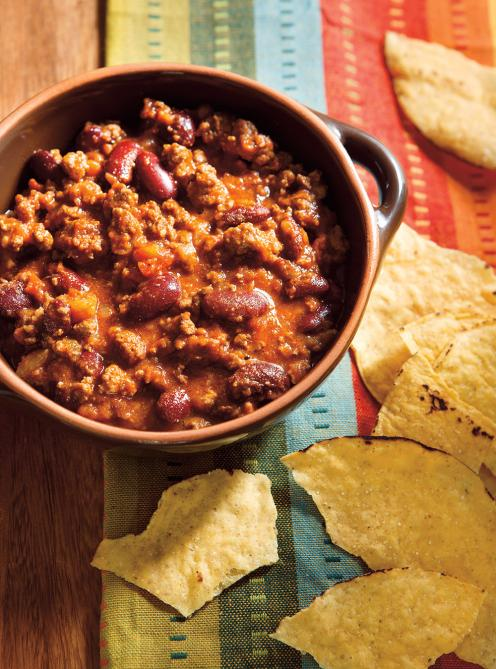

Chili Recipe

Classic Beef Chili
This is a beef chili recipe. The recipe is good. I enjoy making it for
my brother. He enjoys eating it. I do not have a life story to tell
about this recipe.
This is another paragraph about the recipe. I know you all want to read
about how this recipe changed my life and live laugh love
type stuff. So I will tell you this recipe changed my life
and you should live laugh love.
Ingredients
- 1 onion
- 1 jalapeno
- 2 tablespoons butter
- 1 kg ground beef
- 2 cloves garlic
- 2 tablespoons chili powder
- 1 teaspoon ground cummin
- 1 can(789 ml) diced tomatoes
- 1 can(540 ml) kidney beans
- 1 cup java
- 1/4 cup beef broth
- 1/4 cup ketchup
- 3 tablespoons lime juice
- 1/4 cup chopped fresh cilantro
Cooking Instruction
- In a large saucepan, brown the onion and pepper in the butter. Add
the meat and brown thoroughly. Season with salt and pepper. Add the
garlic and spices and cook for 2 minutes while stirring.
- Add the remaining ingredients, except for the cilantro, and bring
to a boil. Simmer half-covered for 45 minutes or until the chili
thickens. Add the cilantro. Adjust the seasoning.